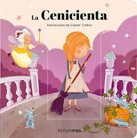
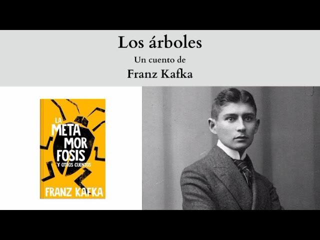
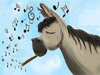

Los cuentos entretienen, aportan valores y ayudan al desarrollo de las emociones. Son una de las herramientas más valiosos para la educación de los más pequeños y, así, lo manifiestan muchos expertos. Según el psicólogo Rafael Guerrero, la lectura de cuentos en familia beneficia a niños y a adultos.



Cenicienta es inicialmente una sirvienta en su casa y es constantemente objeto de burla por su malvada madrastra Lady Tremaine y sus dos hermanastras. Aunque ella es maltratada y humillada, mantiene la esperanza a través de sus sueños. Ella es fiel a la idea de que algún día sus deseos de felicidad se harán realidad.


Pues somos como troncos de árbol en la nieve. Aparentemente yacen en un suelo resbaladizo, así que se podrían desplazar con un pequeño empujón. Pero no, no se puede, pues se hallan fuertemente afianzados al suelo. Aunque fíjate, incluso eso es aparente. Franz Kafka (1883 - 1924) es considerado uno de los escritores más importantes de la literatura moderna. Su obra es bastante autobiográfica y muestra al individuo frente a las dificultades de la vida. Al ser de origen judío en la Europa de comienzos de siglo, tuvo bastantes problemas para encajar en la sociedad del periodo. Además, sufrió de tuberculosis desde su juventud, por lo que padecía de una salud delicada. Por medio de una metáfora, intenta demostrar la resistencia humana frente a las adversidades. Esto será característico en varias de sus obras, pues ante los problemas de la vida, siempre pareciera haber una solución o una raíz que permita aferrarse.

irada en el campo estaba desde hacía tiempo una Flauta que ya nadie tocaba, hasta que un día un Burro que paseaba por ahí resopló fuerte sobre ella haciéndola producir el sonido más dulce de su vida, es decir, de la vida del Burro y de la Flauta. Incapaces de comprender lo que había pasado, pues la racionalidad no era su fuerte y ambos creían en la racionalidad, se separaron presurosos, avergonzados de lo mejor que el uno y el otro habían hecho durante su triste existencia. El escritor Augusto Monterroso (1921 - 2003) se hizo reconocido a nivel mundial como el creador del microcuento, género que pretende reducir al mínimo de elementos una historia. En este relato breve, el autor postula que la racionalidad no tiene por qué necesariamente ser el camino adecuado en todas las situaciones de la vida. Hay muchas veces en que el azar puede crear oportunidades maravillosas para una criatura tan simple como un burro, del que nadie espera nada. Por ello, depende de cada quién aprender a vislumbrar el potencial que puede llegar a tener cada cosa que sucede.

"Dejando de lado los motivos, atengámonos a la manera correcta de llorar, entendiendo por esto un llanto que no ingrese en el escándalo, ni que insulte a la sonrisa con su paralela y torpe semejanza. El llanto medio u ordinario consiste en una contracción general del rostro y un sonido espasmódico acompañado de lágrimas y mocos, estos últimos al final, pues el llanto se acaba en el momento en que uno se suena enérgicamente. Para llorar, dirija la imaginación hacia usted mismo, y si esto le resulta imposible por haber contraído el hábito de creer en el mundo exterior, piense en un pato cubierto de hormigas o en esos golfos del estrecho de Magallanes en los que no entra nadie, nunca. Llegado el llanto, se tapará con decoro el rostro usando ambas manos con la palma hacia adentro. Los niños llorarán con la manga del saco contra la cara, y de preferencia en un rincón del cuarto. Duración media del llanto, tres minutos. Julio Cortázar (Argentina, 1914-1984) es uno de los escritores más destacados del siglo XX. En sus cuentos, trató de jugar con las posibilidades del lenguaje, planteando el texto como un artefacto con diversas interpretaciones. En "Instrucciones para llorar", busca hacernos reflexionar sobre algo tan básico para el ser humano como expresar las emociones. Hace alusión a un acto completamente común, para que así el lector pueda tomar consciencia de la necesidad de dejar de racionalizar la vida y empezar a vivirla.